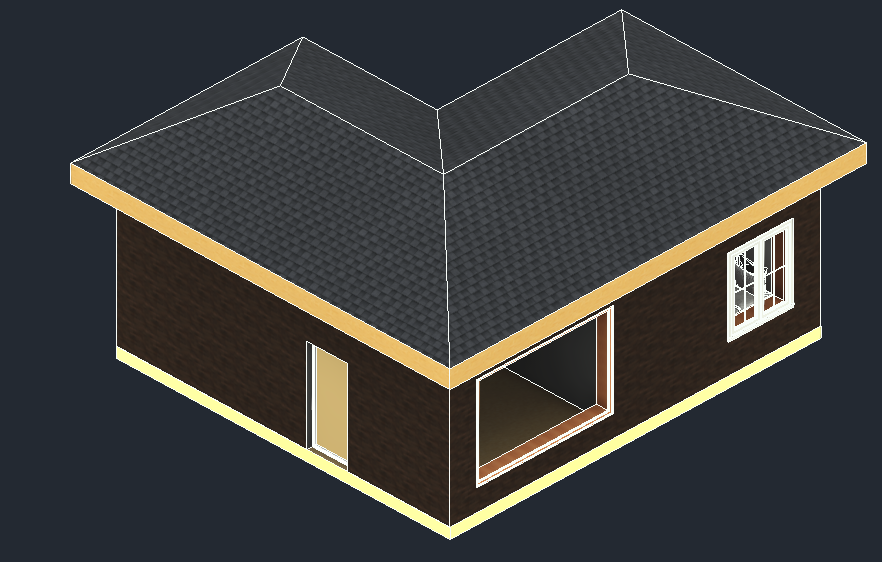
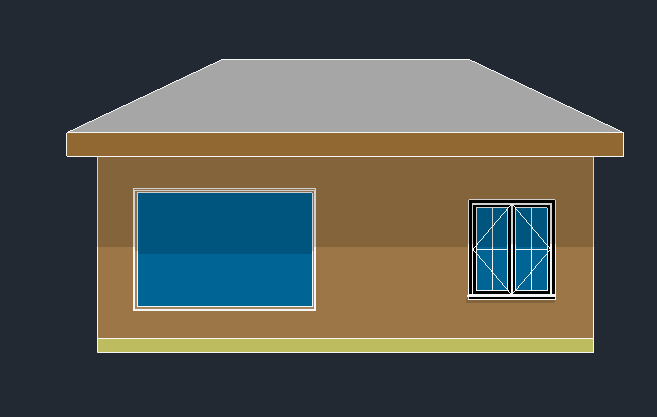
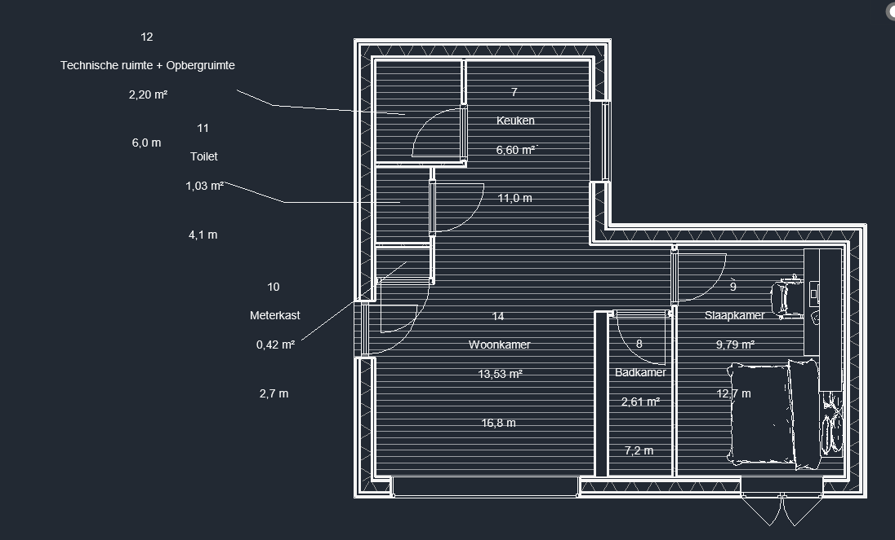

Tiny House — compact wonen in Revit
Tools gebruikt
Revit
3D-modellering
Bouwtekeningen
Over dit project
Voor dit project was de opdracht om een tiny house te ontwerpen en volledig uit te werken in Revit. Een tiny house is een kleine, compacte woning van maximaal 50 m² die efficiënt gebruik maakt van de beschikbare ruimte. Ik heb het ontwerp uitgewerkt met plattegronden, gevels en een volledig 3D-model. Daarbij heb ik rekening gehouden met de indeling, de constructie en de maatvoering van de ruimtes.
Afbeeldingen


